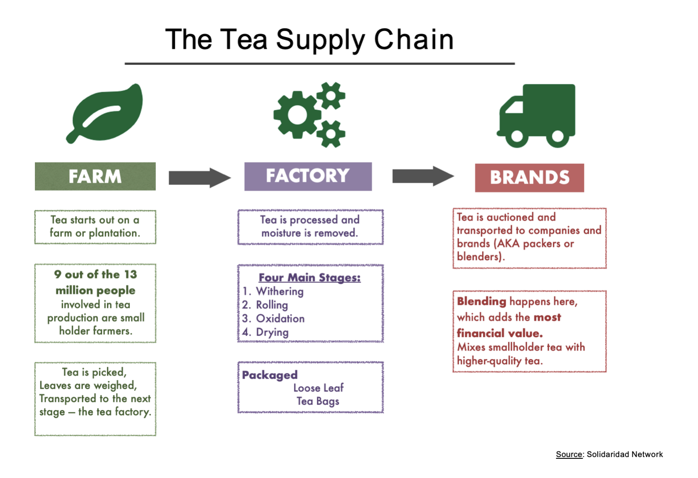
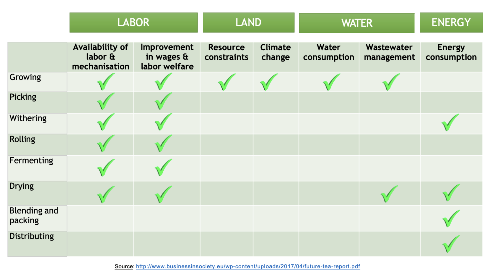
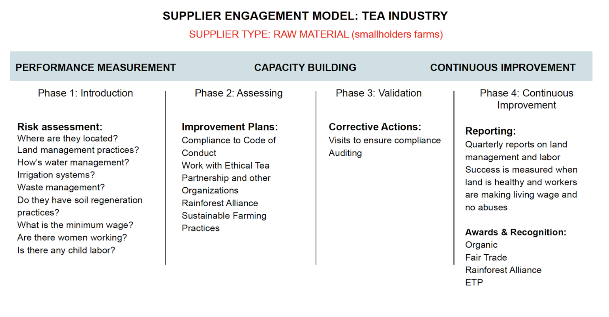
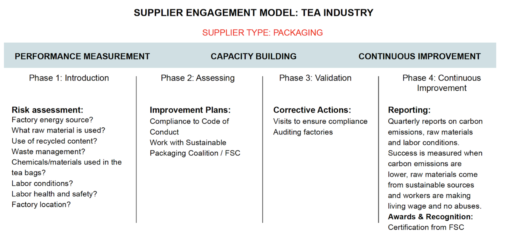
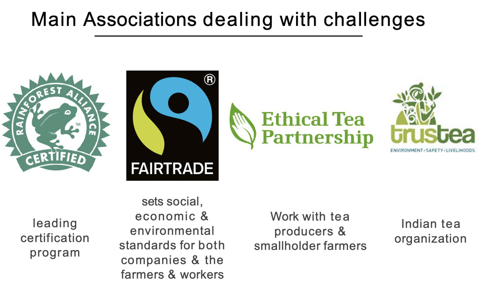
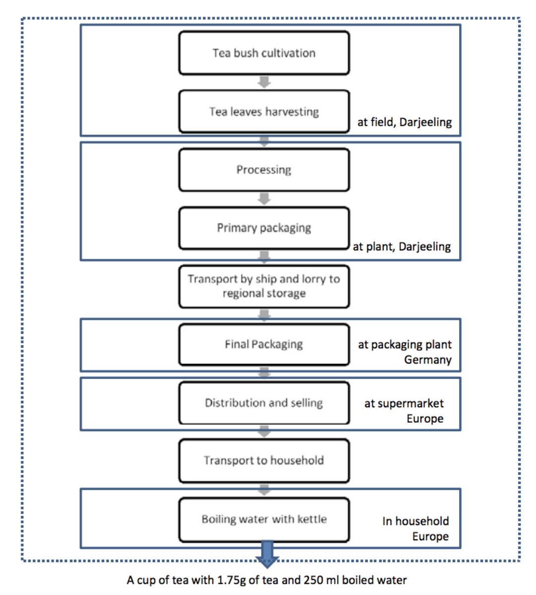
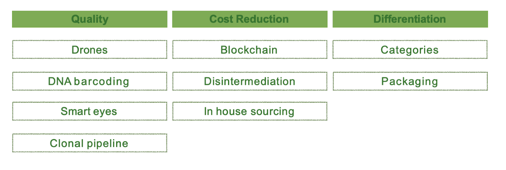

Definition
- An aromatic beverage prepared by pouring hot or boiling water over cured or fresh leaves of Camellia Sinensis, a shrub native to China and East Asia
- The most popular drink in the world after water
- Tea wholesale in 2017 = $12 Billion / RTD $7 Billion
- ¾ of Tea comes from Asia
- China is the largest tea consumer in the world - 38%
- China exports +300K tons of tea annually
Supply Chain Overview

Recent & Relevant News
Legal Issues & Major Controversies

Mapping the Supply Chain
Supplier Engagement Model


Governance
Benchmarks
Monitoring

Verification
Reporting
Life Cycle Assessments
LCA Darjeeling TEA
Goal and scope:
In this study, black tea has been assessed and more precisely Darjeeling tea which is cultivated in the Darjeeling area in Northern India.
The questions are the following:
• What are the environmental impacts of the tea cultivation? Are they similar to coffee?
• What are the impacts of tea manufacturing?
• What are the impacts of tea preparation?
• Which packaging has higher environmental impacts?
Functional unit:
Tea is mainly consumed in tea bag or as loose tea packed in large package and dosed by the final consumer. Tea bags contain in average 1.75g of broken tea leaves while the amount of loose tea depends on the consumer’s taste and the type of tea. It has been assumed that in case of loose tea consumption, 1.75g of tea are also used. Thus, the functional unit is the preparation of one cup (250 ml) of tea ready to drink at home in Europe and the reference flow is 1.75g of dry tea leaves.
System boundaries:

Scenarios investigated:
1) Organic cultivation and packaging in tea bags
2) Organic cultivation and loose tea in multiwalled large package
3) Organic cultivation and loose tea in multiwalled large package without distribution in supermarket. The reason for not including the distribution is to model the life cycle of Teekampagne Darjeeling tea, which is directly sent to the final consumer in private parcel.
4) Conventional cultivation and packaging in tea bags
5) Conventional cultivation and loose tea in multiwalled large package
Impact assessment:
- Ecological scarcity - waste, soil erosion, emissions into air, emissions into water, emissions into soil, natural resources use, energy resources use
- Global warming - CO2 emissions
- Energy demand
These are some of our learnings:
- In all scenarios, in terms of ecological scarcity, for the production of tea without taking into account the tea consumption, the biggest impact comes from cultivation and harvesting
- When consuming tea, biggest impact is the emissions into air
- Concerning global warming (calculated in CO2 emissions), the biggest impact in the whole LCA (cultivation to consumption) comes from consumption (heating and boiling) in all scenarios, followed by cultivation and harvesting. Organic tea has a higher impact: the growth of organic tea amounts to 10-11 % of the total carbon footprint while it is only 6-7% for conventional cultivation. The reason is the use of large quantities of compost, which emits fossil methane in the air
- Concerning energy demand, by far the highest impact is during consumption - boiling, due to the amount of electricity needed
- Compared to a cup of coffee, its environmental impacts are lower in terms of eco-points. It was found that because ground coffee requires more processing steps and a higher quantity of coffee berries from the field (lower yield), the overall impacts are higher.
- Around 70% of the total impacts are caused by the electricity consumption for boiling the water. Thus it is of key importance that the consumer adopts an economical behaviour and reduces the excess amount of boiled water and invest in an energy-efficient kettle.
- To reduce the impact of processing (mainly drying), new methods can be evaluated, such as an alternative technology called fluidised bed dryer (FDB), hot air is blown directly into the drier and the process of fluidisation moves the leaves. The throughput is higher and the fuel consumption per kg of tea is half the amount used in a conventional dryer (tea leaves are dried by being carried on a conveyor through which pressured hot air is blown)
Other Challenges & Impacts
Innovations

Conclusions
- Empower the producers
** 9 million people are smallholders (out of 13 million) ** Less than 3% of the retail value
- Traceability and Transparency
** Less than two years since major companies started to publish sustainability practices (as of 2019)
- The Power of the Consumer
** Consumption is the biggest environmental impact, how can designers, government, and the tea industry do to